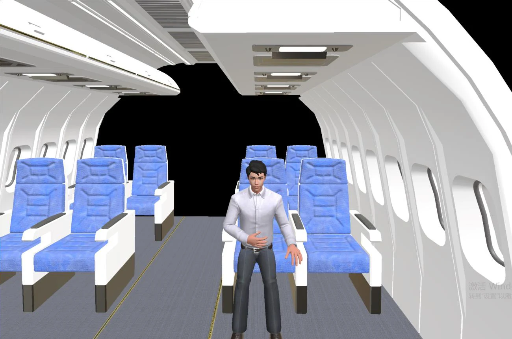
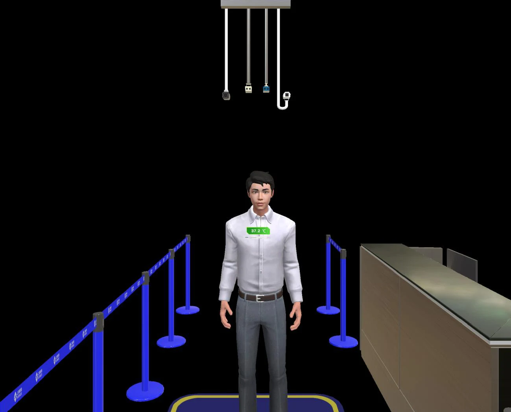
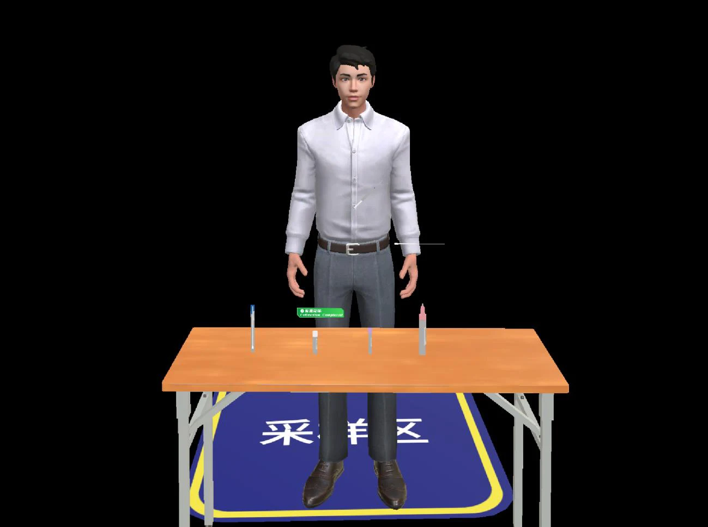
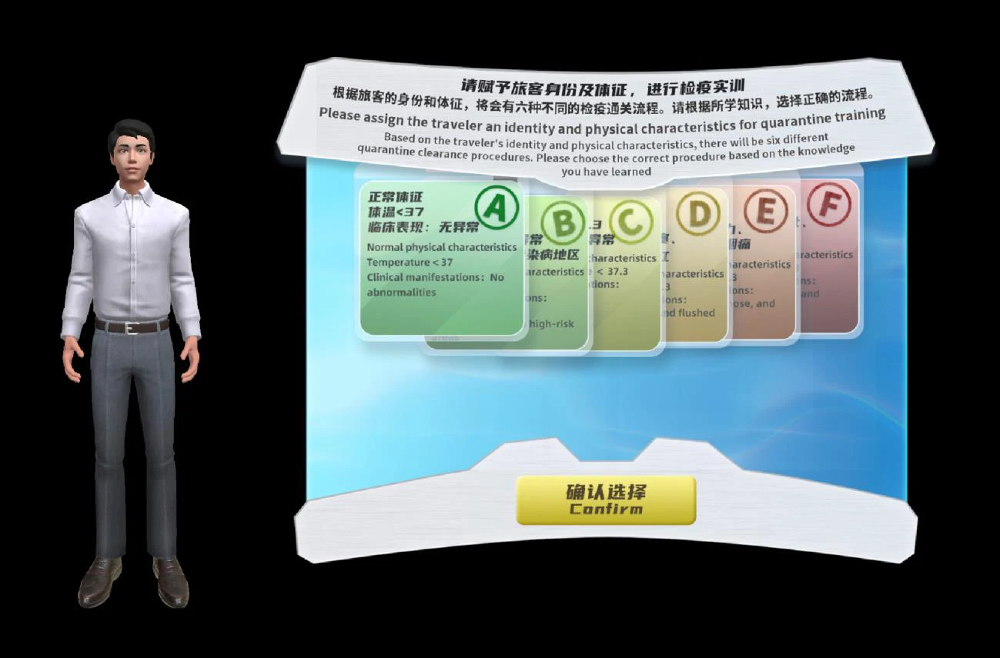

识别风险线索
综合申报、行程、体征与症状，理解不同线索如何影响后续排查路径。
在可重复、可回溯的虚拟口岸，完成从旅客信息识别到检疫处置的决策训练。
实验名称：口岸传染病“三查三排一转运”应急流程虚拟仿真实验。以六类旅客情境串联健康申报、体温监测、医学巡查、流行病学调查、医学排查、实验室检测与转运处置。
教学内容依据：操作手册第 20—29 页、技术说明书第 4—7 页及流程设计图。本站是实验导览与交互演示，原平台为独立 Windows 客户端。

在每一个分岔口，
理解判断的依据。
综合申报、行程、体征与症状，理解不同线索如何影响后续排查路径。
熟悉复测、流调、采样送检、处置与转运环节，避免跳过关键步骤。
结合操作记录与成绩明细，分析分支选择、流程完整性与协同处置。



原平台采用 C/S + B/S 架构：Windows 三维实训客户端配合 Web 培训管理后台。
上述原平台配置为技术说明书第 5—6 页的历史建议，非本站硬件要求，也非新部署选型建议。
先在指导模式中建立正确路径，再在实训和考核中检验独立判断。三种模式的提示、重试和成绩行为各有不同。

FIG. 04 / TRAINING INTERFACE阅读情境与任务，检查账号、当日课次和设备。
登录客户端，选择房间，输入房间密码并确认人员。
查看课件描述，选择 A—F 流程；考核由系统随机派发。
观察线索，依次执行节点操作，完成对应处理分支。
查看训练成绩与明细，比较正确路径，形成实验报告。
来源：操作手册第 6—9、11—19 页。学习路径为网站教学编排。
由常规通行到异常报告与转运，比较不同症状和检测信息如何改变操作路径。以下描述对应资料中的教学情境。
操作手册第 20—29 页和第三方测试报告的 A—F 具体路径，较技术说明书第 6 页的概括更细。本站采用操作手册中的 D“排除传染病放行”、E“流感检测后自行就医”、F“霍乱检测后转移与消毒”等教学情境；不将技术方案对 D/E 的隔离、转运概括覆盖具体分支。C 流程正文存在排版/OCR 歧义，结合流程图与测试记录表述为初测异常、复测正常后放行。体温数值、病种与措施仅为历史课件情境，不构成现行执法或医学判断标准。
教师准备与学员操作顺序相衔接。展开查看操作方法、检查项和原手册页码。
课次仅在设定日期与时段内有效；指导模式不上传操作结果；实训可重试并显示成绩；考核不重复开始，完成后按“考核完毕”退出。请先确认模式，再开始操作。
把 AI 放在辅助理解、遗漏提醒与复盘解释的位置。由教师确认评价，由专业人员确认处置。
把原始表达拆解为症状、时间与待补充信息，并保留来源。
演示章节 / 点击切换
选择一个模拟操作片段，查看对应的提示与依据。此处为预设规则演示，不调用模型、不接收真实旅客信息。
反馈会呈现操作证据、待核实节点和教师复核建议。
本次交付包含四幕式概念动效和预设反馈交互。界面、旅客编号、对话与日志均为合成设计，不是已上线 AI 系统的录屏。原技术说明书第 15 页将 AI 助教列为后续扩展。未来可从脱敏操作事件中提取节点，检索经教师审核的课件依据，生成带来源的反馈候选；先做离线评测，检查误报、漏报、引用准确性，再由教师确认。语音问询应支持手动校正、最小化采集与授权，不自动诊断或自动作出转运决定。
阅读演示分镜与接入方案内容按原文件页码标注。网站教学编排与 AI 概念设计均单独说明，保留历史资料与当前实现的边界。
第三方测试报告针对送检客户端 V1.0，报告记载 2025 年 9 月开展测试，17 项需求相关的 48 个功能均能正确实现。该结论的范围仅限报告所列测试，不是对本站或 AI 概念功能的认证。绥芬河海关应用证明记载 2025 年 4 月起开展相关成果试用，证明内容涉及综合课题多项成果，不能据此推导本站已获官方授权或每个 AI 功能已实际应用。
网站为资料整理与教学展示，非上海海关学院或海关机构官方网站。公开版本不提供原系统入口，不附含人员信息、样例凭据与签章的原始扫描件。实际检疫作业请依现行法律法规与主管部门规程执行。